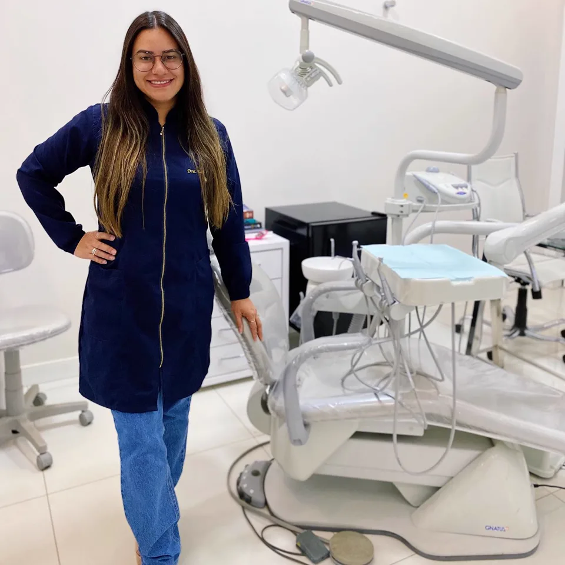

Atendimento infantil
Consulta no ritmo da criança, pra ela sair querendo voltar.
- Primeira consulta do bebê e orientação pros pais
- Limpeza infantil, flúor e selante
- Restauração e cuidado com o dente de leite
- Acompanhamento da troca dos dentes
Atendimento infantil · Ortodontia · Clínica geral
Cuidado da família inteira desde o primeiro dentinho: crianças, adolescentes e adultos atendidos pela mesma equipe, em Irecê.
Cada um com CRO-BA. Clínica geral, ortodontia, endodontia e implantodontia.
Do primeiro dentinho à prótese, sem peregrinar por consultórios.
Rua Réggio Emília, 210 E. Sábado com horário combinado.
A LCR acompanha cada fase do sorriso: o cuidado da infância, o aparelho quando chega a hora e a rotina do adulto. Na mesma clínica, com a mesma equipe.
Consulta no ritmo da criança, pra ela sair querendo voltar.
Aparelho no momento certo, com o sorriso que ele quer mostrar.
Os pais também são cuidados aqui, sem julgamento, mesmo depois de anos longe do dentista.
Tudo na mesma clínica, com equipe própria. Se não souber por onde começar, começa pela avaliação.
Do primeiro dentinho à troca dos dentes, no ritmo da criança.
Limpeza, flúor e selante pra evitar que o problema apareça.
Aparelho convencional e autoligado, pra adolescentes e adultos.
Tratamento de canal pra salvar o dente que dói.
Restaurações em resina e clareamento, caseiro ou no consultório.
Extrações de dente de leite, permanentes e siso.
Limpeza profunda e gengivoplastia pra gengiva saudável.
Próteses totais e parciais pra voltar a mastigar e sorrir com conforto.
Não sabe por onde começar? Começa pela avaliação: a gente monta o plano com você.
Agendar avaliaçãoEncontre a fase do seu filho (ou a sua) e veja o que importa agora.
A primeira consulta é recomendada quando nasce o primeiro dente, ou até o primeiro aniversário. Limpeza da gengiva, amamentação e chupeta entram na conversa.
Ler o guia do primeiro dentinhoEscovação com ajuda do adulto, alimentação, a hora de deixar chupeta e mamadeira, e a primeira visita sem medo.
Como preparar a primeira consultaO dente de leite cai e o primeiro molar nasce lá atrás, sem avisar. É a melhor fase pra primeira avaliação ortodôntica.
Ler o guia da troca dos dentesAparelho no momento certo, higiene reforçada e acompanhamento do crescimento. Sem infantilizar: é o sorriso que ele quer mostrar.
Ler o guia do aparelho fixoPrevenção, clareamento, canal ou prótese: os pais seguem na mesma clínica, com a mesma equipe.
Ler o guia do clareamentoNão sabe em que fase está? Manda a idade no WhatsApp que a gente orienta.
Perguntar no WhatsAppOrientações simples pra cuidar em casa. Leia no site ou baixe o PDF pra ler no celular. Sem cadastro.
Quando o primeiro dente nasce, como limpar a gengiva e os dentinhos, chupeta, mamadeira e a hora certa da primeira consulta.
Passo a passo dos primeiros minutos: estancar o sangue, o que fazer se o dente caiu ou quebrou e quando correr pro dentista.
Os primeiros dias, o que comer, como escovar de verdade, bráquete solto, manutenções e o que muda entre convencional e autoligado.
Como funciona, a diferença entre o caseiro e o de consultório, sensibilidade, quem pode fazer e como manter o resultado.
A gente sabe que a primeira vez no dentista dá um frio na barriga, na criança e nos pais. Por isso ela acontece assim, passo a passo:
Você conta a idade e o motivo. A recepção separa o melhor horário, de preferência de manhã pros pequenos.
A criança conhece a recepção, a sala, a cadeira e os "instrumentos de astronauta". Colo liberado. Nada acontece sem ela entender antes.
Contamos os dentinhos, olhamos como estão crescendo e conversamos com você sobre escovação, alimentação e hábitos.
Se a criança topar, a limpeza suave e o flúor já acontecem na mesma consulta. Se não topar, fica pra próxima. Ninguém força.
A criança sai com o plano combinado, o retorno marcado e uma lembrança da LCR pra levar pra casa.
Vale pros adultos também: avaliação completa, sem julgamento, mesmo se você não vai ao dentista há anos.
Histórias reais de pais e pacientes, publicadas nas avaliações do Google da Clínica LCR.
Ainda não temos histórias com esse tema por aqui. Veja todas no Google.
Trechos de avaliações públicas no Google. Nomes de crianças foram omitidos.
No centro de Irecê, uma clínica clara, organizada e pensada pra criança se sentir segura e o adulto se sentir em casa.
Cada profissional com o próprio CRO-BA e a própria área, na mesma clínica. Seu filho e você conhecem a equipe pelo nome.

"Consultório pode ser um lugar leve, onde a criança entra curiosa e sai sorrindo."
—
—
—
As áreas acima são as de atuação de cada profissional.
A Dra. Lara acredita que consultório de dentista pode ser um lugar leve, onde a criança entra curiosa e sai sorrindo, e o adulto é atendido com calma, sem pressa e sem julgamento.
Por isso a LCR trabalha com prevenção e acompanhamento de longo prazo: mais do que tratar, a gente caminha junto com a sua família pra evitar que o problema apareça.
Muitos pais chegam trazendo o filho e acabam cuidando do próprio sorriso aqui. É assim que uma clínica vira a clínica da família.
Retornos e revisões combinados e lembrados. Prevenção só funciona com constância, e a constância é nossa responsabilidade também.
Clínica geral, orto, canal, próteses e cirurgia com equipe própria. Sua família não precisa peregrinar por consultórios.
Atendimento de segunda a sexta e sábado com horário combinado. Chamou no WhatsApp, a gente encaixa.
Explicamos cada passo do tratamento com transparência, sem "dentistês": você decide sabendo o que está decidindo.
Não achou a sua dúvida? Manda no WhatsApp que a gente responde.
Perguntar no WhatsAppChama no WhatsApp que a gente encontra o melhor encaixe pra sua família. Se preferir, escolha o horário online.